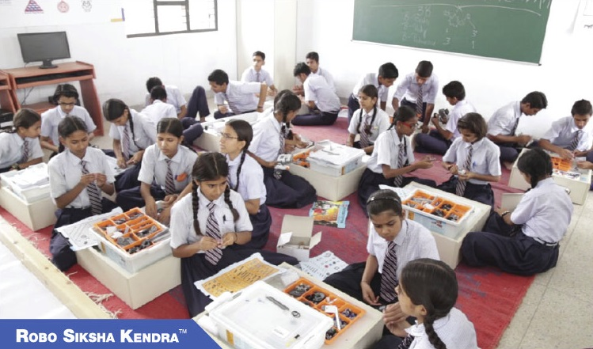

About me
I am an interdisciplinary AI researcher, currently an Assistant Professor at the University of Bath. My work bridges Computer Vision with Arts, developing AI-driven solutions for creative domains. My research focuses on generative models, 3D reconstruction, multimodal large language models, depth estimation, visual saliency, and multitask learning, aiming to push the boundaries of AI integration into society. I have recently been awarded three prestigious fellowships: Perplexity AI Business Fellowship (international), Elevate Leadership Fellowship (UK-wide recognition) and Impact and Knowledge Exchange Fellowship (local).
Beyond research, I am passionate about Cognitive Systems & AI Ethics, exploring how AI interacts with human cognition and understanding its ethical and societal impacts. My goal is to develop AI systems that are responsible and inclusive.
Teaching & Mentorship
I enjoy teaching Visual Computing, Computer Vision, AI Product Management, and Machine Learning. Having worked in multinational corporate teams, I integrate real-world AI applications into my courses, particularly those in the creative industries. Teaching for me is more than knowledge transfer—it's about inspiring creativity and fostering an inclusive classroom where students engage in cutting-edge AI projects.
I have supervised 5 PhD students, 21 Master's research students, and 13 Bachelor's students across the US, Switzerland, and China. I am always open to supervising doctoral students passionate about AI, Computer Vision, and interdisciplinary AI applications. If you're interested in impact-driven AI research at the confluence of AI and creative domains or in Responsible AI, feel free to reach out at db2466 (at) bath (dot) ac (dot) uk
Leadership & Impact
I serve as the Athena SWAN Chair & EDI Advocate, leading the Department’s Self-Assessment Team (DSAT) and contributing to the Equality, Diversity, & Inclusion Committee. My outreach efforts include mentoring for Women in STEM initiatives and organizing Women in Computer Vision Workshops at CVPR 2025 (Nashville) and CVPR 2024 (Seattle). I was also a mentor for Women in Computer Vision at ECCV 2024 (Milan), supporting diversity and inclusion in AI. Further, I was the general chair of the AI for Visual Arts Workshop (ECCV 2024). Additionally, I curate events for early-career researchers, fostering collaboration and networking opportunities both nationally and internationally. I volunteer for Teach for India and EduCare (a non-profit initiative for teaching children and empowering girls). Through these efforts, I aim to bring STEM to communities inclusive of all representations- gender, sexual orientations, nationality, race etc.
Expertise Related to UN Sustainable Development Goals
My work contributes towards the UN Sustainable Development Goals (SDGs):
- SDG 4: Quality Education
- SDG 5: Gender Equality
- SDG 10: Reduced Inequalities


News
Awarded three prestigious fellowships: Perplexity AI Business Fellowship, Elevate Leadership Fellowship (UK-wide recognition) and Impact and Knowledge Exchange Fellowship.
Collaborating internationally as an AI consultant with SilenceSpeaks, Deaf Village UK, United Nations, and Dev TV.
Invited guest at the SuperDataScience podcast on Deep Learning for Machine Vision with 20K+ views.
Invited guest at a podcast on Solving an Optimization Problem with a Custom Built Algorithm with 15K+ views.
Organizer of Women in Computer Vision Workshop (WiCV) at CVPR 2025, Nashville, and General Chair of AI for Visual Arts Workshop at ECCV 2024.
Most Recent Publications:
- WiCV@ CVPR2024: The Thirteenth Women In Computer Vision Workshop
- Unlocking Comics: The AI4VA Dataset for Visual Understanding (ECCV 2024)
- Data Augmentation via Latent Diffusion for Saliency Prediction (ECCV 2024)
- CoDA: Instructive Chain-of-Domain Adaptation with Severity-aware Visual Prompt Tuning (ECCV 2024)
- OMH: Structured Sparsity via Optimally Matched Hierarchy for Unsupervised Semantic Segmentation
- Vision Transformer Adapters for Generalizable Multitask Learning, ICCV 2023
Past Publications
Vision Transformer Adapters for Generalizable Multitask Learning
Dense Multitask Learning To Reconfigure Comics
MulT: An End-to-End Multitask Learning Transformer
Modeling Object Dissimilarity for Deep Saliency Prediction
Estimating Image Depth in the Comics Domain
Fidelity Estimation Improves Noisy-Image Classification With Pretrained Networks
DUNIT- Detection based Unsupervised Image to Image Translation
Image Analysis using a novel learning algorithm based on Plant Intelligence
An Immersive Learning Model Using Evolutionary Learning
A Leukocyte Detection technique in Blood Smear Images using Plant Growth Simulation Algorithm

A Hybrid Search Optimization Technique Based on Evolutionary Learning in Plants
An object localization optimization technique in medical images using plant growth simulation algorithm
Autonomous Terrestrial Image Segmentation and Sensor Node Localization for Disaster Management using Plant Growth Simulation Algorithm
Evolutionary Reinforcement Learning based Search Optimization
Adaptive Transcursive Algorithm for Depth Estimation in Deep Learning Networks
Talks
- Poster presentation at CVPR 2022 on Multitask Learning in Computer Vision, New Orleans, USA, 2022.
- Invited talk on the Evolution of Computer Vision in recent years: Convolutional Neural Network to Transformers and Self-supervised Learning at Synapse, Milan, 2022.
- Oral and poster presentation at WACV 2022 on Learning Image Depth in Comics Domain, Hawaii, USA, 2022.
- Poster presentation at CVPR 2020 on Detection based Unsupervised Image to Image Translation, Seattle, USA, 2020.
- Invited speaker about Future Trends in Deep Learning, at International Conference on Data Science and Big Data Analytics, on May 24-25, 2018 in Toronto, Canada.
- Poster presentation at WiML (Women in Machine Learning) workshop, Long Beach, California, USA, 2017.
- Advances in Deep Learning, CiTE, Samsung Intelligent Media Research Centre,Postech, South Korea, 2017.
- Oral presentation at AAAI about Plant Intelligence and how it can be used to optimize Machine Learning, San Francisco, USA, 2017.
- Oral presentation at ICSI, Bali, Indonesia, 2016.
- Oral presentation and poster presentation at ACM SAC, Italy, 2016.
- Talk at Platcon, Jeju, South Korea, 2017.
- Departmental Talk on Vision, Deep Learning and Optimization, Kyungpook National University 2016.
- Oral presentation at Computer Science and Engineering department, Kyungpook National University, 2015.
- Oral presentation at the project grant proposal meetings, Daegu, South Korea, 2015-2017.
Academic Services
Reviewer of journals and conferences:
- Reviewer of proceedings of IEEE/ CVF Computer Vision and Pattern Recognition (CVPR).
- Reviewer of TPAMI.
- Reviewer of proceedings of IEEE/ CVF Computer Vision and Pattern Recognition (CVPR).
- Reviewer of proceedings of IEEE/ CVF European Conference on Computer Vision (ECCV).
- Reviewer of proceedings of IEEE/ CVF International COnference on Computer Vision (ICCV).
- Reviewer of proceedings of IEEE/ CVF Winter Conference on Applications of Computere Vision, WACV.
- Reviewer of proceedings of IEEE Women in Machine Learning.
- Reviewer of IEEE Transactions on Signal and Information Processing.
- Reviewer of Elsevier Computers And Electrical Engineering .
- Reviewer of IEEE Intelligent Transport Systems [invited].
- Reviewer of Thomas and Francis Behaviour and Information Technology.
- Reviewer for Springer Plus Journal.
- Reviewer of IEEE Transactions on Emerging Topics in Computing.
- Reviewer of Springer Cluster Computing- The Journal of Networks, Software Tools and Applications.
- Reviewer of proceedings of ACM SAC 2016, 2017.
Teaching and Research Supervision:
- Supervised 2 successful Master Theses at EPFL on image translation and dense multi-task learning. Past students are working at Google.
- Supervised 5 research projects leading to 3 publications.
- Head teaching assistant for Computational Photography CS-413 at EPFL.
Member of organizations:
- Member of Association for the Advancement of Artificial Intelligence (AAAI).
- Member of International Machine Learning Society (IMLS).
- Member of Computer Society of India.
- Member of Association for Computing Machinery.
AWARDS
- Swiss National Science Foundation Sinergia Grant, Switzerland 2019-2023.
- Women in Machine Learning (WIML) Grant, 2017.
- ACM SAC SRC best student paper nomination -top 5 globally, 2016.
- ACM SIGAPP Travel Award, Italy, 2016.
- KNU International Student Ambassador 2017- present.
- Brain Korea 21 Plus grant for research, Kyungpook National University, awarded to top 1% of the applicants in Department of Computer Science Engineering 2015-2017.
- Awarded full merit scholarship by Kyungpook National University, 2015-2017 (4 Semesters).
- Christ University Merit Scholarship - all 8 semesters, 2011-2015. Dean's List.
- MS Artificial Intelligence, Offer of Study, from New York University, 2015.
- MBA Business Analytics, Offer of Study, from University of Tampa, Florida, USA, 2015.
- BS Computer Science Engineering (transfer), Offer of Study, from University of Rochester, USA 2013.
- Best Overall Performer of the Year 2012 of all undergraduate and postgraduate students, Christ University.
- Runner-up International Science Debate Competition by Quanta, November 2009.
- Won Gold medal and ranked 1st in National Cyber Olympiad in India, 2005.
- Awarded Distinction in Macmillan International Assessment, University of New South Wales, Australia, 2004-2006.

Outreach
-
Sponsored and Mentored a team of middle school children for the First Lego League in India. Click to know more.
Volunteered as a Mentor at the Robo Siksha Kendra (the Non-profit Robotics school of India STEM Foundation) event for encouraging kids specially girls in STEM and AI. Click to know more
Organized a preparation workshop on Computer Science for International Robotics Competition at India STEM Foundation. Attended by 350 children aged between 6-12 years. Mentored an all-girls team for the International Robotics Competition.
Further Work
- 3D reconstruction of objects in comics domain: A work done as part of the Swiss National Science Foundation Sinergia project. Video link